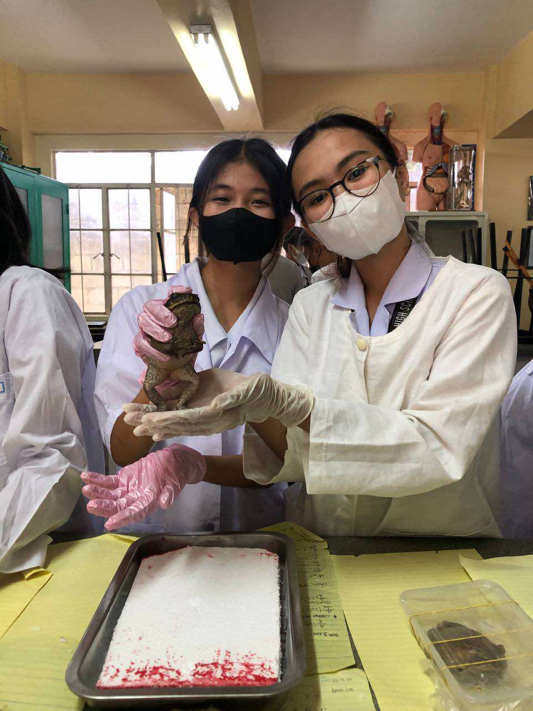

About me
Hi, I am Vanessa Joyce Dapat, a first-year Computer Engineering student at the National College of Science and Technology, driven by a passion for technology, innovation, and problem-solving. My background in the STEM strand has equipped me with strong analytical and technical skills, along with a foundational proficiency in C++ and AutoCAD. I am eager to explore various aspects of engineering, from software development to hardware design, to enhance my expertise in the field. With a commitment to continuous learning and growth, I aim to contribute to technological advancements and make a meaningful impact in the industry.
